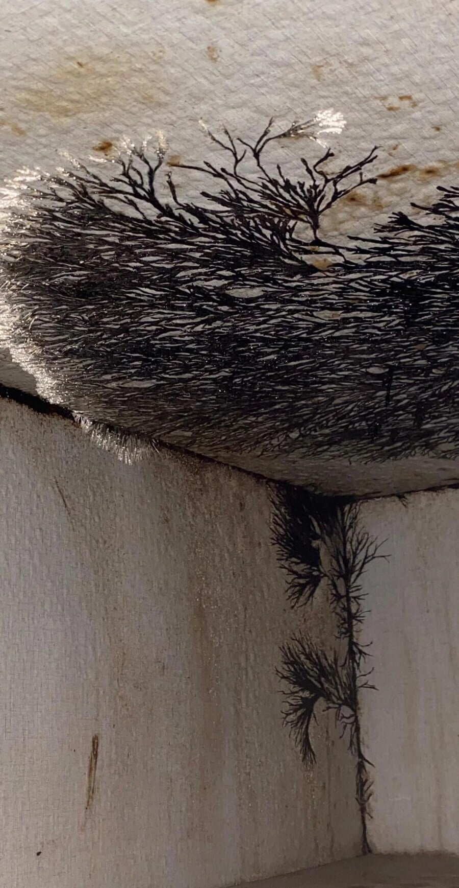

144 · 12 · 17 시간 전 · 원문

세계 뒷편의 이면 세계에 침식당하고 있는거 아님
수집 당시 댓글 12개
usgnod · 11 시간 전
캬 저정도면 한 일주일 냅두면 지들끼리 투표도 하겠는데
↳ 답글 · 선생님의마음씨 · 10 시간 전
한달정도 놔두면 헌법도 만들었을듯
DQ · 10 시간 전
그냥 화분이라고 마인드 컨트롤 하며 살자..
내인생모르겠다 · 9 시간 전
라스트 오브 어스 세트장?
야간투시경 · 9 시간 전
난널버리지않아 · 9 시간 전
오버마인드 생성중이네
아무것도아닌 · 9 시간 전
좀 많이 신기하다 몇년동안 습기 개 오지는데 방치해도 저렇겐 안되겠는데
dametime · 7 시간 전
차아염소산나트륨
아니뭐해 · 2 시간 전
침식당하는건 맞는거 같은데
행운의편지 · 1 시간 전
심비오트잖아
친절한그렐로드 · 15 분 전
씨발 불로 정화하고싶네
뜌따이 · 2 분 전
베놈이잖아
캬 저정도면 한 일주일 냅두면 지들끼리 투표도 하겠는데